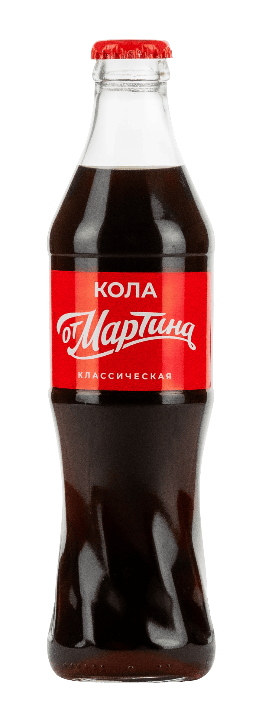
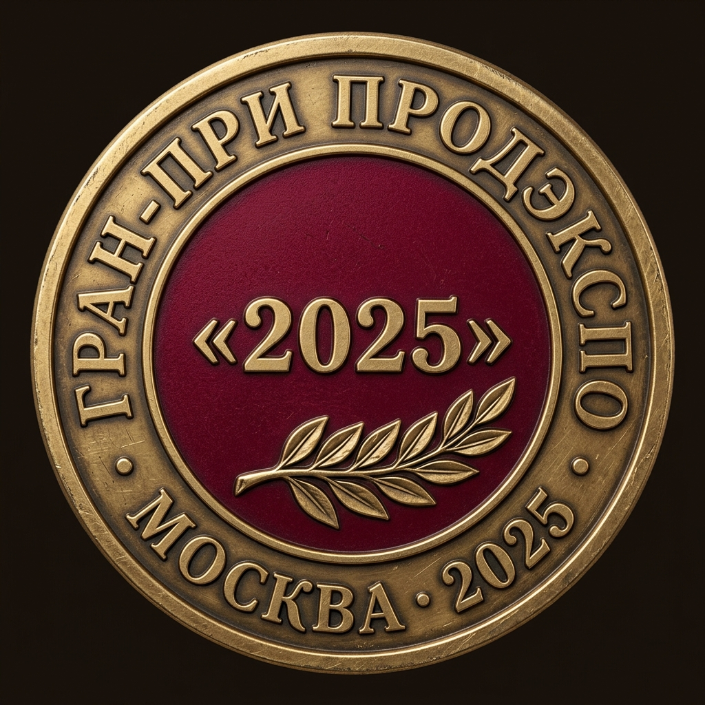
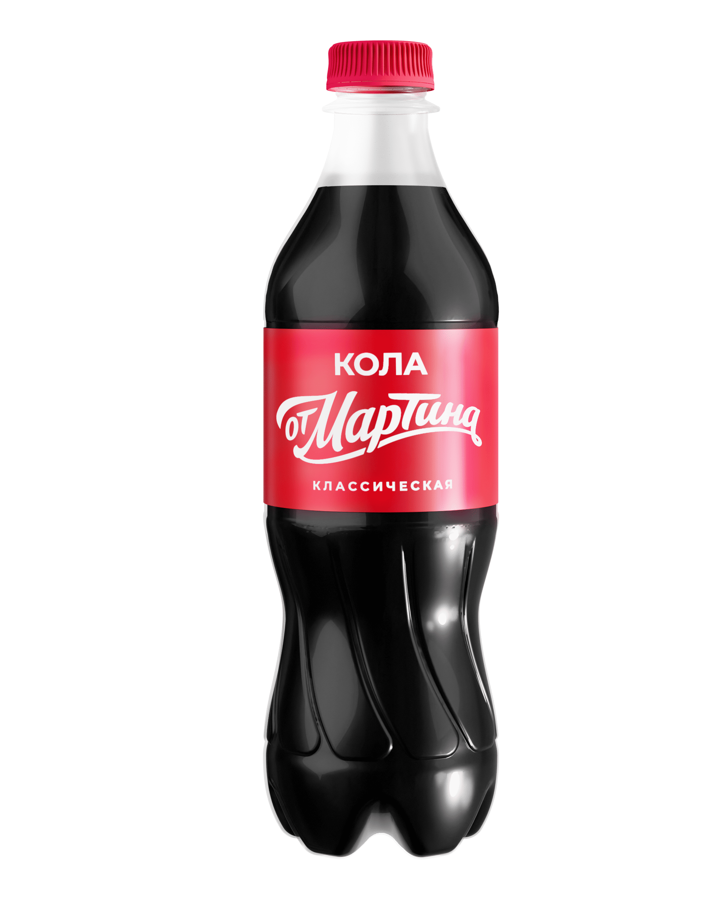
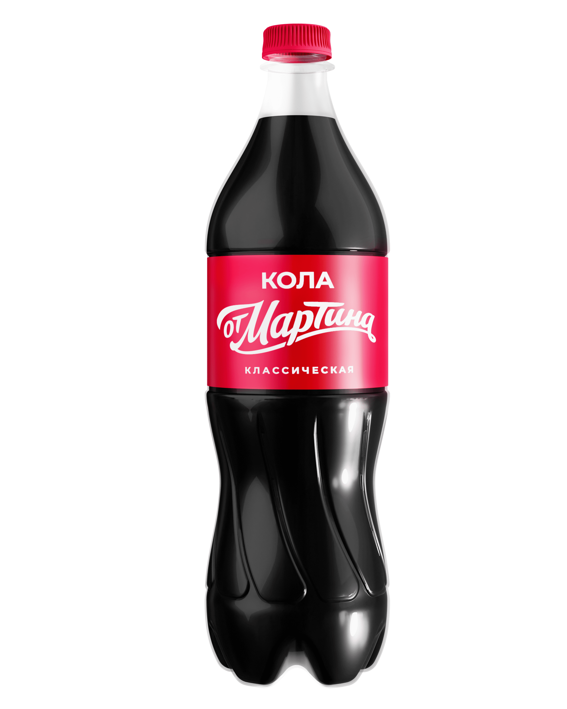
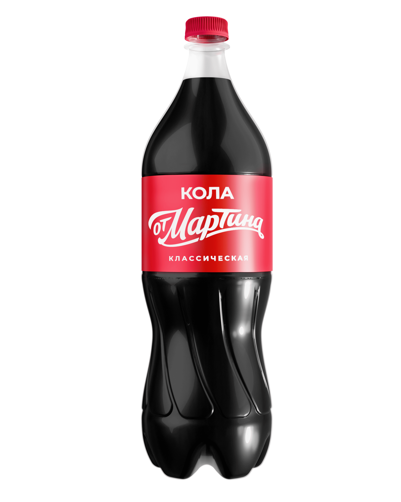
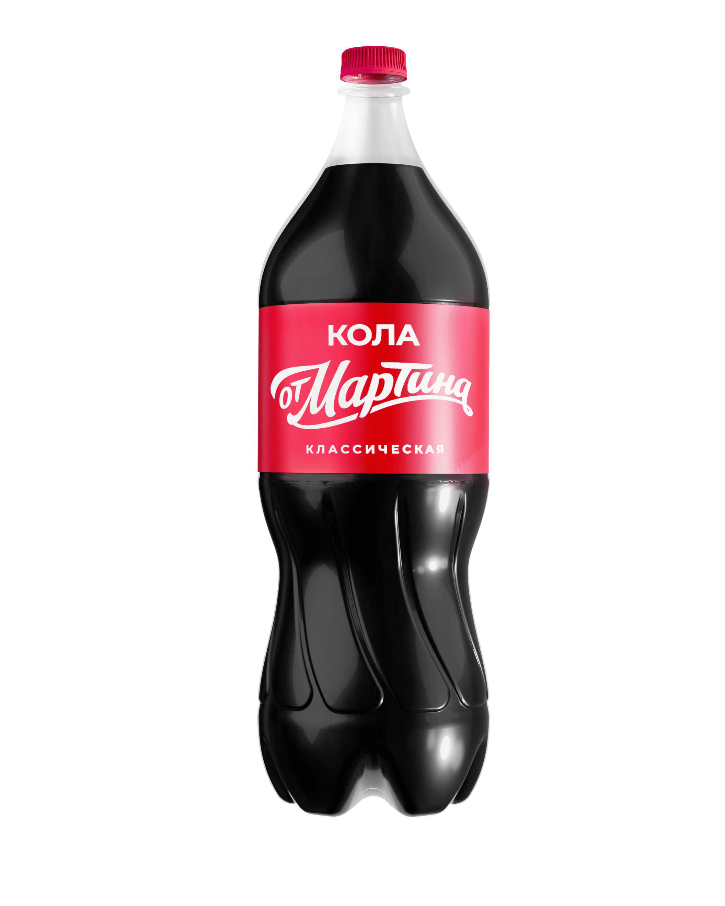

2000
Основание
Семейное дело в Электроуглях
Производство «Мартин» основано в 2000 году в подмосковных Электроуглях. Начиналось с одного — чтобы имя на упаковке что-то значило.


MARTIN-MSK — официальный дистрибьютор крафтовой колы на артезианской воде. Прямые оптовые поставки, самовывоз и доставка от одной паллеты.
Производство «Мартин» основано в 2000 году в подмосковных Электроуглях. Начиналось с одного — чтобы имя на упаковке что-то значило.
За двадцать пять лет бренд стал одним из самых узнаваемых в своей категории. Та же команда технологов, тот же контроль каждой партии.
Пять производственных площадок — Электроугли, Кущёвская и Белая Глина в Краснодарском крае, Иркутск, Ереван. Артезианская вода для колы — из собственной скважины на Кубани.
В 2025 году «Кола от Мартина классическая» получила Гран-при Продэкспо в категории безалкогольных напитков. Первый сезон в новой категории — высшая награда отрасли.
Белоглинская скважина пробурена в одноимённом артезианском бассейне. Вода проходит через слой известняка толщиной более ста метров — этот процесс занимает десятилетия и даёт минеральный состав, который невозможно воспроизвести.
На каждую партию производитель берёт пробу воды и готового продукта. Паспорт партии хранится семь лет и доступен по запросу.
Погружной артезианский насос подаёт воду через стальной обсадной столб в накопительный резервуар. Контур замкнут — никакого контакта с атмосферой до розлива.
Только механические фильтры тонкой очистки. Минеральный состав сохраняется — фильтр снимает взвеси, не трогая воду по сути. Двухступенчатый картриджный фильтр, замена — по ресурсу.
Сироп со специями — закрытая разработка производителя — смешивается с водой в заданной пропорции. Готовый купаж охлаждается до +2 °C и насыщается пищевым CO₂ в сатураторе при давлении 4,2 бар.
Розлив в тёмное стекло 0,33 л и ПЭТ 0,5 и 1 л, маркировка партии лазером. Каждая партия хранится в архивном холодильнике на протяжении срока годности — для обратной экспертизы.
HoReCa-формат. Бары, рестораны и кофейни — подача на стол, барная карта.




Большой объём. Гипермаркеты, оптовые базы, кейтеринг.
Москва, м. «Рязанский проспект». Минимальный заказ — от 20 000 ₽.
Доставка по Москве и Московской области. Минимальная партия для доставки — одна паллета.
В дегустации участвовали 106 потребителей. Каждый образец оценивался по 5-балльной шкале без информации о бренде. «Кола от Мартина классическая» получила самый высокий средний балл среди десяти марок.
«"Кола от Мартина классическая" получила самый высокий средний балл по итогам независимой слепой дегустации — 4,09 из 5 среди десяти марок колы».
MARTIN-MSK поставляет «Колу от Мартина» оптом по Москве и Московской области — магазинам и розничным сетям. Самовывоз со склада и доставка от одной паллеты. Прайс и спецификации высылаем после заполнения формы.
Поставки в магазины и сети. Стабильное наличие на складе, гибкий график отгрузок, средний и крупный опт.
MARTIN-MSK работает с оптовыми и розничными клиентами по Москве и Московской области. Заполните форму — менеджер свяжется в течение рабочего дня, пришлёт актуальный прайс и условия отгрузки.